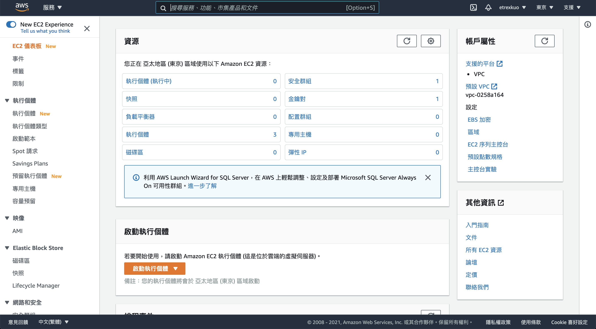

建立 AWS EC2 實例
點擊 AWS 管理主控台 或 登入主控台：

點選左下角的語系設定，切換到中文(繁體)：

點擊左上角 服務：

點擊 EC2：

點擊 左側選單的 執行個體：
點擊右側的 啟動新執行個體：

點擊 Select 選擇第一個項目，也就是 Amazon Linux 2 AMI (HVM), SSD Volume Type：
點擊 Review and Launch：
點擊 Launch：

在 Select an existing key pair or create a new key pair 表單中，填入：
Create a new key pair- Key pair name:
aws
點擊 Download Key Pair，保存檔案後按下 Launch Instances：
點擊右下角 View Instances
點擊剛建立好的執行個體的超連結進入內頁：

看到這個畫面就完成了。